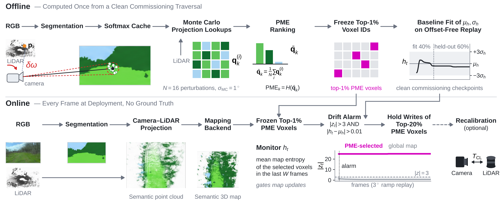
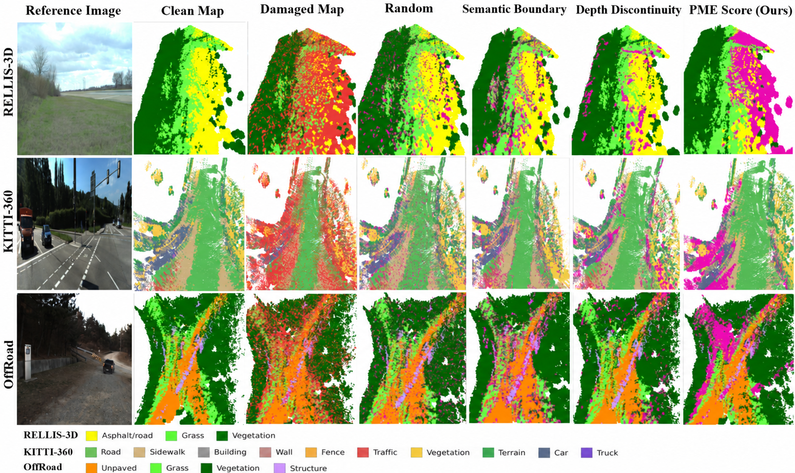

Abstract
Camera–LiDAR semantic mapping writes every label through the extrinsic calibration, so drift or a time offset silently corrupts the map. Online calibrators and calibration monitors judge only the sensor pair, not the map, and a constant-extrinsic calibrator cannot remove a time offset. We observe that misalignment concentrates label errors in a few voxels whose projections cross label changes, which map-wide statistics dilute. For robots that repeat a route, such as patrol and inspection robots, we turn this observation into a training-free monitor that supervises rather than replaces calibration. A projection-marginalized entropy ranks vulnerable voxels from one clean pass of the route. A label-free gate on the map entropy of a small monitored set decides when to check the calibration, and the mapper holds the updates of a wider protected set until then. On urban and off-road data, including next-day re-drives, the gate detects 91% of the runs that lose over 5% mIoU, including runs a calibration monitor deems valid, almost never alarms without an offset, and flags a real image–scan pairing fault (a 137 ms time offset). Holding the protected set avoids 53–60% of the corruption.
Supplementary Video
Method Overview

Results
| Dataset | Score | Voxel AUROC ↑ | AUPRC ↑ | Spearman ↑ | P@1 ↑ |
|---|---|---|---|---|---|
| RELLIS-3D | PME (ours) | 0.793 | 0.489 | 0.526 | 0.637 |
| JSproj | 0.791 | 0.501 | 0.531 | 0.775 | |
| Seg-Entropy | 0.706 | 0.391 | 0.350 | 0.543 | |
| All-matched random | — | — | — | 0.566 | |
| KITTI-360 | PME (ours) | 0.755 | 0.600 | 0.420 | 0.810 |
| JSproj | 0.736 | 0.556 | 0.390 | 0.699 | |
| Seg-Entropy | 0.725 | 0.562 | 0.372 | 0.729 | |
| All-matched random | — | — | — | 0.717 | |
| Off-road | PME (ours) | 0.908 | 0.577 | 0.566 | 0.753 |
| JSproj | 0.879 | 0.410 | 0.570 | 0.401 | |
| Seg-Entropy | 0.880 | 0.524 | 0.491 | 0.658 | |
| All-matched random | — | — | — | 0.631 |
| mIoU loss (%) | Clean | <2 | 2–5 | 5–10 | 10–20 | >20 |
|---|---|---|---|---|---|---|
| All runs (78 drifted, 14 offset-free) | ||||||
| Runs | 14 | 8 | 13 | 16 | 20 | 21 |
| PME gate (ours) | 0/14 | 3/8 | 9/13 | 14/16 | 18/20 | 20/21 |
| First alarm (%) | – | 44 | 49 | 31 | 29 | 21 |
| Prevented (%) | – | 21 | 35 | 61 | 64 | 76 |
| RELLIS-3D + KITTI-360 (same runs) | ||||||
| Runs | 9 | 0 | 6 | 7 | 7 | 20 |
| PME gate (ours) | 0/9 | – | 2/6 | 5/7 | 6/7 | 19/20 |
| OCAMO, z-gate | 3/9 | – | 5/6 | 2/7 | 3/7 | 7/20 |
| LTO, z-gate | 4/9 | – | 5/6 | 5/7 | 4/7 | 12/20 |
| OCAMO, own rule | 0/9 | – | 0/6 | 0/7 | 0/7 | 0/20 |
Clean counts alarms on offset-free replays (false alarms); the other columns count detections. At a 5% tolerance the gate alarms on 52 of the 57 runs that need recalibration (91%).
| Drive | Route (%) | False alarms ↓ | Detected at offset | |||||
|---|---|---|---|---|---|---|---|---|
| PME gate | Map diff | 0.5° | 1° | 1.5° | 2° | 3° | ||
| Re-drive A | 74 | 1/67 | 41/67 | – | ✓ | ✓ | ✓ | ✓ |
| Re-drive B | 31 | 0/40 | 33/40 | – | – | – | – | ✓ |
| Re-drive C | 14 | 0/16 | 16/16 | ✓ | ✓ | ✓ | ✓ | ✓ |
Registration error, lighting and vegetation relabel more voxels across days than the offset itself, so the plain map comparison alarms on most offset-free checks, while the gate stays almost silent and detects offsets from 1° on two of the three drives.
Qualitative Results

Code
The source code will be released publicly upon acceptance.
BibTeX
% Citation withheld during double-anonymous review. % The BibTeX entry will be added in the camera-ready version.